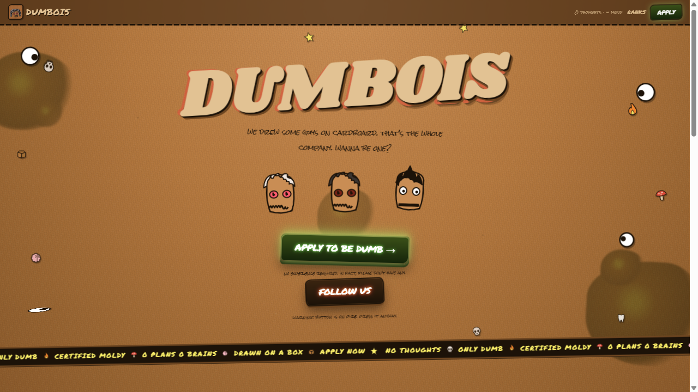
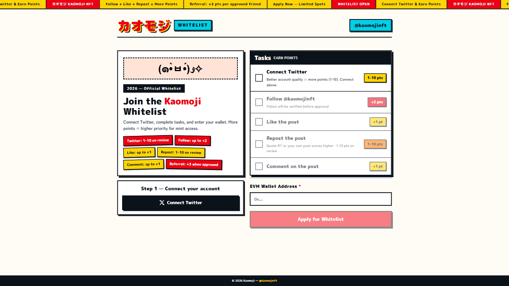

NFT / WL Ops
Task mapping, social execution, form submission, proof capture, and private reporting.
Web3 Operator / Automation Builder
Fast execution for NFT allowlists, airdrop workflows, community ops, and lightweight automation systems.

Positioning
I work around Web3 task flows where speed, consistency, and clean reporting matter: allowlist entries, campaign tracking, social tasks, wallet-safe workflows, and small tools that remove repeated manual work.
Task mapping, social execution, form submission, proof capture, and private reporting.
Request-based workflows, browser fallback, monitoring scripts, and repeatable runbooks.
Channel posts, campaign copy, launch notes, and concise public-safe updates.
Selected Work
Allowlist Campaign
Completed multi-account social tasks, echo posts, and site submission flow with concise private result reporting and public-safe channel share.

Whitelist Flow
Handled social requirements, referral tracking, OAuth blockers, and status breakdown.
System Design
Built a repeatable operating pattern for main-account-first execution, alt-account sequencing, wallet mapping, and private/public report separation.
Stack
Contact
Send the link, goal, deadline, and risk rules. I care about the result, not the theatre.